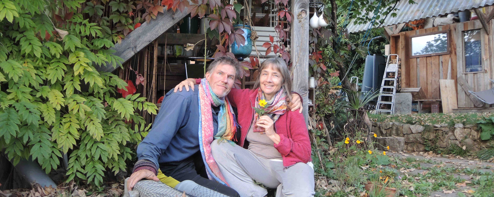

Nach ein paar Jahren Pause ist es wieder so weit – die Party steigt – dieses Jahr am 19.11.
Wir wollen gemeinsam feiern und verbunden sein.
Mit Feuer und Sauna draussen, Musik und Tanz im Haus.
Wir freuen uns ueber jeden kreativen Beitrag, vor allem, was uns gemeinsam motiviert, zusammenbringt, verbindet.
Darum geht es uns, das liegt uns am Herzen.
Fuer Getraenke und Grundnahrung ist gesorgt.
Bring gerne was Leckeres fuers Buffet mit, deine Musik zum Tanzen, alles, was dir Spass macht, vor allem dich selbst und dein So-Sein wie du bist.
Es gibt keine bestimmte Anfangszeit. Du kannst kommen und gehen wann du willst. Wir freuen uns auch tagsueber ueber Besuch.
Du bist auch herzlich willkommen, in den Tagen vorher, Mittwoch, Donnerstag und Freitag bei uns hereinzuschauen, plaudern, spielen, vorbereiten, zusammen sein, auch falls du am Samstag verhindert sein solltest. Dann haben wir mehr Zeit zum Austauschen und zusammen sein!
Wegen Uebernachtung bitte im Hotel Elben nebenan nachfragen.
Am Sonntag den 20.11 machen wir ca. 12:00 bis 24:00 Uhr eine Schwitzhuette, zeitlos, entspannt und spirituell. Wenn du daran Interesse hast, schau dir die Infos unten an und melde dich schnell und verbindlich an, da nicht mehr als zehn Menschen Platz haben.
Wir wuenschen dir wunderbare Herbstwochen und freuen uns, wenn du kommst.
Liebe Gruesse,
Moni und Jeremy
2008 mit Schnee:


2015 und 2016:


mehr fotos von 2016 – more pictures from 2016 – das feuer und die aussicht am naechsten tag – the fire and the view the next day.
die schwitzhuette ist eine gemaechliche sache, zeitlose 'indianerzeit', ohne stress und leistung.
zeit: ungefaehr sonntag mittag 12 uhr, bis spaet abends, ausklang mit gemeinsames essen, ende ca. 23 uhr.
am mittag fangen wir an mit dem aufbau, einrichten und vorbereiten, am spaetnachmittag zuenden wir das feuer an, damit wir am fruehen abend schwitzen und danach zusammen essen und ausklingen lassen koennen.
jeder bringt was zum essen mit.
fuer die schwitzhuette ist ein handtuch, gute schuhe, handschuhe und warme kleider sinnvoll, mehr braucht es nicht.
dem feuermann oder der feuerfrau uebergibt man ein kleines geschenk; wir wissen noch nicht, wer das sein wird.
mehr infos zum thema schwitzhuette gibt es auf wikipedia und vielen anderen orten.
here is some information in english about the sweat lodge.
man muss aber nichts wissen – you do not need to know anything at all :-)
Erste, despektierliche version:

Leserbrief und die zweite, korrigierte Version: